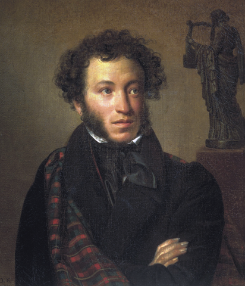

Pushkin's poem:
- I Loved You
- Friendship
- A Little Bird
<<Back to main page
|

Alexander Sergeyevich Pushkin
(6 June 1799 - 10 February 1837)
One of the chief names in literature during the Romantic era was Alexander Pushkin. He was an eminent Russian romantic poet and deemed the father of modern Russian literature. He penned some of the momentous nineteenth century poetry, novels, prose and dramas. These works include The Captain’s Daughter, Ruslan and Ludmila and Eugene Onegin.
Born on June 6, 1799, in Moscow, Russia, Alexander Sergeyevich Pushkin belonged to Russian nobility, whose ancestry can be traced back to twelfth century
Pushkin attended the prestigious Imperial Lyceum in Tsarskoe Selo, where he put his artistic creativity to use and began working on his first widely recognized literary work. In 1820, he published a long poem, titled Ruslan and Ludmila, based on a Russian folk tale that he heard as a child. Written in a verse form it is considered one of the distinguished poetry works in Russian literature.
He also wrote a host of highly acclaimed plays, such as The Feast During the Plague, Mozart and Salieri and The Avaricious Knight. One of his plays, Tales of the Late Ivan Petrovich Belkin (1831), is assumed to be inspired by Sir Walter Scott’s novel. Besides poetry and play writing, he wrote short stories as well. ‘The Queen of Spades’ (1834) is a poignant story of a gambler, who shared quite a few similarities with his creator. The short story was later adapted by Tchaikovsky into an opera. In his final years, Pushkin began writing a historical account of Peter the Great that he, unfortunately, failed to finish.
Alexander Pushkin’s literary work was heavily inspired by his predecessors; Derzhavin, Karamzin, Zhukovsky and Batyushkov. In addition to his instrumental literary contribution to the modern Russian literature, he was also credited for expanding Russian lexicon. He died young in 1837, having been brutally injured in a duel he fought against his wife’s brother-in-law.
|